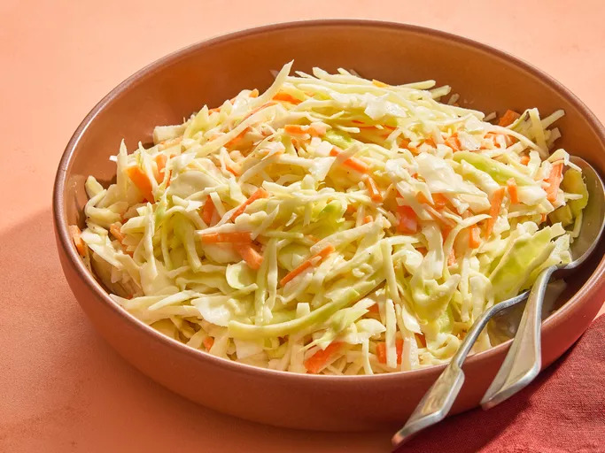

Southern Coleslaw

Description
This recipe for Southern coleslaw has been handed down through the years and works well for any gathering.
Its sweetness and tanginess are precisely balanced. Some have even said it tastes like KFC coleslaw. The judge is you!
Ingredients
- Vegetables: Cabbage, Carrots and Onions.
- Mayonnaise, Milk and Buttermilk lend creaminess and flavour.
- Sugar
- Lemon Juice
- Vinegar
- Seasonings
Steps
- Mix the veggies in one bowl and make the dressing in another bowl.
- Pour the dressing over the veggies and mix thoroughly.
- Cover and refrigerate for at least two hours.
Your Southern coleslaw is ready to be served!